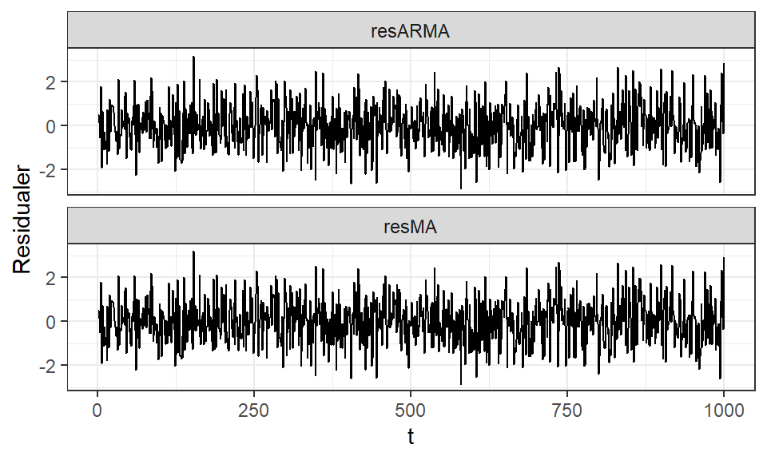
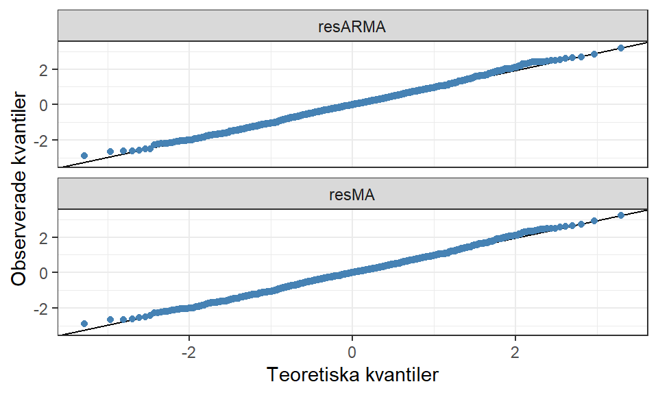
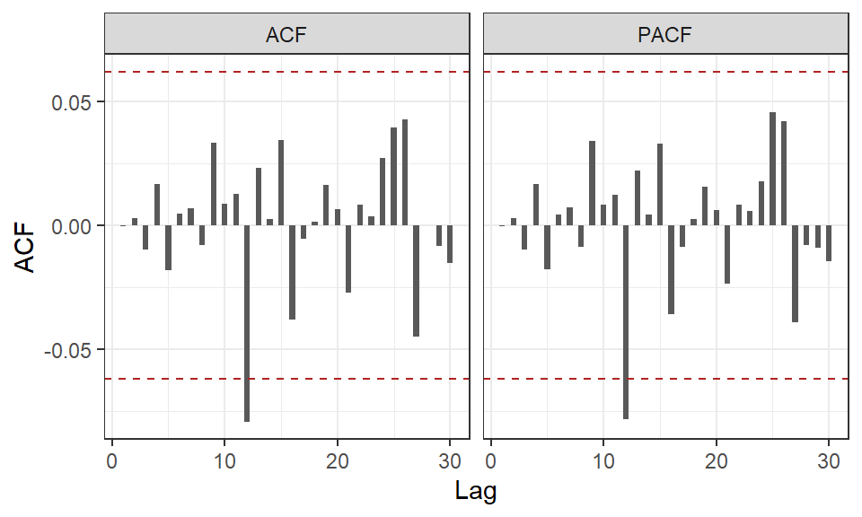
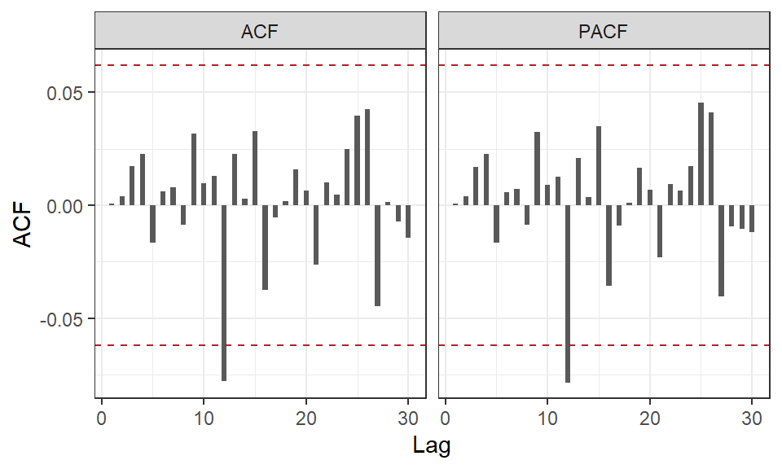
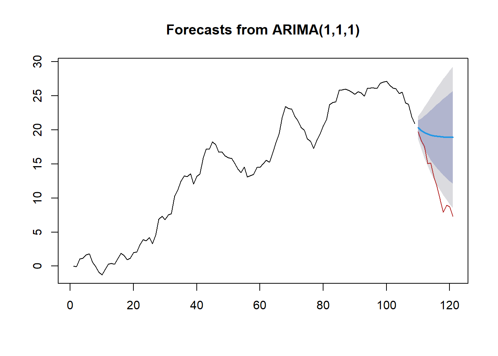

residARMA <- residuals(modelARMA)
residMA <- residuals(modelMA)24 Modellutvärdering
Trots att vi kan använda SAC, SPAC och EACF för att fatta ett informerat beslut om vilken modell (AR(p), MA(q) eller ARMA(p,q), med eller utan differentiering) som är lämpligast för en observerad tidsserie, är det inte alltid så lätt att enbart välja en modell. Istället kan vi anse dessa verktyg som en del av processen och utvärdering av anpassade modeller som ytterligare en del, vilken bör vägas in innan en slutgiltig modell väljs.
Modellutvärdering kan fokusera på ett par olika aspekter, till exempel:
- hur bra är modellen anpassad på observerad data?
- hur bra är modellen på att generalisera till ny data?
- hur komplex är modellen?
- hur rimliga prediktioner kan modellen skapa?
Vi kan återanvända några mått från regressionsteorin för att besvara vissa av dessa frågor, till exempel AIC för generalisering och varianter på residualspridning (MSE) anpassad för tidsserier. En visuell analys av prediktioner i relation till den observerade serien ger oss också möjligheten att se hur modellen skulle tillämpas för framtida tidpunkter.
24.1 Modellantaganden (vitt brus)
I en regressionsmodell måste vissa antaganden uppfyllas (se Avsnitt 7.1) för att modellen ska vara en lämplig och trovärdig anpassning av datamaterialet. För regressionsmodeller kan vi formulera om modellantaganden till residualantaganden och genomföra en residualanalys för att kontrollera dessa. För ARIMA modeller finns det inga riktiga residualantaganden som sådan men vi vill att modellens AR och/eller MA komponenter plockar upp allt tidsberoende som går att modellera. Den resterande delen av modellen (residualerna, \(\hat{e}_t\)) är då ren slump, det som vi kallade vitt brus i Avsnitt 21.3.1.
Vi kan undersöka \(\hat{e}_t\) från den skattade modellen för att se om den följer de egenskaper som vi förväntar vitt brus ska ha.
1. Visualisering
Vi kan betrakta \(\hat{e}_t\) som en egen tidsserie och skapa ett linjediagram för att visuellt bedöma om serien uppvisar några trender eller andra mönster. Vi vill att serien förhåller sig kring 0 och ser “slumpmässig” ut. Vad som anses vara slumpmässigt kan vara rätt så subjektivt och svårtydat men vi vill inte se perioder med tätt följda punkter (positiv autokorrelation) eller perioder där serien slår från positiva till negativa värden och vice versa (negativ autokorrelation).
2. Normalfördelningen
Vi kan låna ett verktyg från Avsnitt 7.1 och skapa ett QQ-diagram över residualerna för att undersöka om de anses följa en normalfördelning då vitt brus antas vara slumpmässiga dragningar från den fördelningen. Om punkterna inte följer linjen i diagrammet finns det då en risk att de inte kommer från en normalfördelning.
3. SAC och SPAC
Det kan ibland vara svårt att visuellt bedöma om en serie ser slumpmässig ut vilket leder till användningen av mer objektiva mått såsom SAC och SPAC. Dessa kan beräknas på \(\hat{e}_t\) och skapa liknande diagram som vi såg i Figur 23.2 men nu vi vill inte se några spikar i respektive diagram, likt det vi såg i Figur 21.2.
Förekommer det spikar i dessa diagram antyder det att vi saknar någon komponent i modellen, vilket vi då skulle kunna använda som stöd för att anpassa en mer komplex modell enligt Tabell 22.1. Ser SAC långsamt avtagande ut i residualerna ger det en indikation att serien möjligtvis inte var stationär eller att en mer komplex modell krävs för att modellera tidsberoendet korrekt.
4. Ljung-Box
Även om SAC inte uppvisar några signifikanta spikar kan vi ändå få problem om många lagg uppvisar stora autokorrelationer. Ett test som undersöker summan av \(K\) lagg är ett Ljung-Box test som utgår från följande teststatistika:
\[ \begin{aligned} Q_* = n(n+2)\left( \frac{r^2_1}{n-1} + \frac{r^2_2}{n-2} + \dots + \frac{r^2_K}{n-K}\right) \end{aligned} \] som vi kan anse följa \(\chi^2(df = K - p - q)\). Om ett tidsberoende finns kvar i residualerna blir \(Q_*\) stor vilket leder till att vi kan förkasta nollhypotesen, att det inte finns någon autokorrelation i residualerna, om den överstiger ett kritiskt värde från \(\chi^2\)-fördelningen.
Dessa fyra sätt vägs sedan samman för en helhetsbedömning huruvida modellen har lyckats modellera allt tidsberoende så att residualerna bara är vitt brus. Om någon av dessa inte indikerar på vitt brus, behöver vi tänka om i vår modellanpassning och undersöka alternativa, oftast mer komplexa, ARIMA-modeller.
24.1.1 ARMA(1,1) eller MA(2)?
Vi vill titta närmare på våra två modeller, ARIMA(1,0,1) och MA(2) från ?sec-tsa-in-r. Först plockar vi ut residualerna från respektive modell med hjälp av residuals().
Vi börjar med att visualisera de båda residualserierna för att få en bild av hur modellen ser ut.
data <- tibble(
t = seq_len(length(residARMA)),
resARMA = residARMA,
resMA = residMA
) |>
pivot_longer(cols = !t)
data |>
ggplot() + aes(x = t, y = value) + geom_line() +
theme_bw() + labs(y = "Residualer") +
facet_wrap(vars(name), ncol = 1)
Som tidigare nämnt är det mycket svårt att utläsa någonting från dessa visualiseringar, men vi ser åtminstone inga tydliga indikationer på trender i någon av dem.
Vi kontrollerar även residualernas normalfördelning med hjälp av ett QQ-diagram.
Visa kod
data |>
ggplot() +
## Använd standardiserade residualer
aes(sample = scale(value)) +
geom_qq_line() +
geom_qq(color = "steelblue") +
theme_bw() +
labs(x= "Teoretiska kvantiler", y = "Observerade kvantiler") +
facet_wrap(vars(name), ncol = 1)
Figuren visar inga större avvikelser för någon av modellerna.
Nästa steg är att räkna ut autokorrelationen med hjälp av SAC och SPAC så att vi får en bättre bild av serien. Först beräknas och visualiseras residualerna från ARIMA(1,0,1).
data <-
tibble(
lag = 1:30,
# Beräknar SAC och SPAC samt plockar ut endast acf delen av objektet som innehåller korrelationerna
ACF = acf(residARMA, lag.max = 30)$acf,
PACF = pacf(residARMA, lag.max = 30)$acf
) |>
pivot_longer(!lag)
ggplot(data) + aes(x = lag, y = value) +
geom_bar(stat = "identity", width = 0.5) +
geom_hline(yintercept = 1.96/sqrt(length(y)), linetype = 2, color = "firebrick") +
geom_hline(yintercept = -1.96/sqrt(length(y)), linetype = 2, color = "firebrick") +
theme_bw() +
scale_y_continuous(breaks = seq(-1, 1, by = 0.05)) +
labs(x = "Lag", y = "ACF") +
facet_wrap(~name, nrow = 1)
Sedan visualiseras residualerna för MA(2).
data <-
tibble(
lag = 1:30,
# Beräknar SAC och SPAC samt plockar ut endast acf delen av objektet som innehåller korrelationerna
ACF = acf(residMA, lag.max = 30)$acf,
PACF = pacf(residMA, lag.max = 30)$acf
) |>
pivot_longer(!lag)
ggplot(data) + aes(x = lag, y = value) +
geom_bar(stat = "identity", width = 0.5) +
geom_hline(yintercept = 1.96/sqrt(length(y)), linetype = 2, color = "firebrick") +
geom_hline(yintercept = -1.96/sqrt(length(y)), linetype = 2, color = "firebrick") +
theme_bw() +
scale_y_continuous(breaks = seq(-1, 1, by = 0.05)) +
labs(x = "Lag", y = "ACF") +
facet_wrap(~name, nrow = 1)
Figur 24.3 och Figur 24.4 ser väldigt snarlika ut, med i princip alla lagg innanför signifikansgränserna. Det syns endast en spik vid lagg \(k = 12\) i båda men det är ingenting som sticker ut.
Viktigt
Ibland kan enskilda lagg vara signifikanta på grund av slumpen.
När ett större lagg är signifikant behöver vi fundera ifall det finns några säsongseffekter i data som inte plockats upp. Just lagg 12 är speciellt för timvisa data där periodiciteten är 24, eftersom 12 är halva perioden kan ibland effekter synas även för dessa lagg.
I detta fall har vi ingen information om att data är uppmätt timvist (det är det inte då vi inte simulerade en säsongseffekt i serien), så vi anser då att spiken uppkommer utav ren slump.
Båda modellerna verkar alltså inte ha några problem med kvarvarande autokorrelation men till sist undersöker vi detta även med ett Ljung Box test. Funktionen LB.test() genomför ett sådant test för en angiven model och lag. Vanligtvis är det aktuellt att titta på de första laggen i en serie, men vi kan också genomföra flera tester på flera olika lagg för att se ifall vi verkar ha avvikelser från vitt brus över större områden.
LB.test(model = modelARMA, lag = 12, type = "Ljung-Box")
Box-Ljung test
data: residuals from modelARMA
X-squared = 8.6226, df = 10, p-value = 0.5683LB.test(model = modelMA, lag = 12, type = "Ljung-Box")
Box-Ljung test
data: residuals from modelMA
X-squared = 8.7023, df = 10, p-value = 0.5606Båda dessa tester visar på p-värden som är större än 0.05 vilket innebär att nollhypotesen (ingen autokorrelation) inte kan förkastas. I praktiken innebär detta då att vi inte anser serien avvika från ett vitt brus, vilket är bra.
Så båda dessa modeller är väldigt snarlika i sina utvärderingar av det vita bruset, så vi får egentligen ingen hjälp att välja modell mer än att vi kan säga att båda verkar modellera serien bra.
CautionÖvning 1
En ARIMA-modell har anpassats till en tidsserie. För att modellen ska anses ha fångat seriens modellerbara tidsberoende vill vi att residualerna ungefär ska bete sig som vitt brus. Vilka av följande resultat talar för att residualerna kan betraktas som vitt brus?
- Sant. Om SAC och SPAC saknar signifikanta spikar finns det inget tydligt tecken på kvarvarande seriellt beroende vid enskilda laggar.
- Sant. Ljung-Box-testets nollhypotes är att autokorrelationerna upp till det valda antalet laggar gemensamt är \(0\). Ett högt \(p\)-värde innebär att nollhypotesen inte förkastas och talar därför för att residualerna kan betraktas som vitt brus.
- Falskt. Flera signifikanta autokorrelationer tyder på att det finns tidsberoende kvar i residualerna som modellen inte har fångat.
- Falskt. Ett lågt \(p\)-värde leder till att nollhypotesen om frånvaro av autokorrelation förkastas. Det talar alltså emot att residualerna är vitt brus.
- Sant. När modellen har fångat den systematiska tidsstrukturen bör residualerna huvudsakligen bestå av slumpmässiga variationer kring \(0\), utan tydliga trender eller återkommande mönster.
24.2 Utvärderingsmått
För att utvärdera hur bra modellen anpassas till den observerade serien kan vi använda visualiseringar där vi visar både den observerade och anpassade serien i samma diagram. Denna tolkning är dock subjektiv och det kan vara svårt att faktiskt få en helhetsbild av anpassningen. Visualiseringen är bra för att identifiera vissa problemområden av modellanpassningen, ofta tidpunkter som avviker mycket från det generella sambandet där en modell har svårt att hänga med.
Utöver visualiseringar finns tre mått som ger en sammanfattande bild av modellens anpassning vilka kan användas för att jämföra olika modeller.
Mean Square Deviation (MSD) liknar MSE från regressionsmodelleringen där vi numera inte tar hänsyn till antalet parametrar. Måttet beräknas enligt:
\[ \begin{aligned} \frac{1}{n} \sum_{t = 1}^n \left(Y_t - \hat{Y}_t\right)^2 \end{aligned} \tag{24.1}\] och beskriver det genomsnittliga kvadratliga residualen.
MSD kommer påverkas av extremvärden där stora avvikelser mellan observerade och anpassade värden (och dess kvadrat) kommer bidra till större fel i summan.
Mean Absolute Deviation (MAD) tittar istället på absolutbeloppet av residualen där större avvikelser får en mindre inverkan på värdet. Vi får även ett mått som har samma skala som \(Y_t\) vilket ger en fördel för tolkningar. Måttet beräknas enligt:
\[ \begin{aligned} \frac{1}{n} \sum_{t = 1}^n \left|Y_t - \hat{Y}_t\right| \end{aligned} \tag{24.2}\]
Mean Absolute Percentage Error (MAPE) tittar även den på absoluta avvikelserna men sätter det i kontexten av värdet på \(Y_t\). MAPE blir därför ett relativt mått på avvikelser i serien och kan tolkas i procent.
\[ \begin{aligned} \frac{1}{n} \sum_{t = 1}^n \left| \frac{Y_t - \hat{Y}_t}{Y_t}\right| \end{aligned} \tag{24.3}\]
En bra modell har låga värden på dessa mått då det indikerar på mindre fel, men ibland kan måtten säga emot varandra. Detta gäller främst MSD och MAD/MAPE då förekomsten av extremvärden kan överskatta felet i MSD. Då behöver vi göra en sammanlagd avvägning där vi också tar hänsyn till andra utvärderingar för att bedöma vilken modell som är bättre anpassad.
24.2.1 Exempel
Från våra två modeller fås följande utvärderingsmått:
MSD <- function(model) {
sum(residuals(model)^2) / length(y)
}
MAD <- function(model) {
sum(abs(residuals(model))) / length(y)
}
MAPE <- function(model) {
sum(abs(residuals(model) / y)) / length(y)
}
tibble(
Mått = c("MSD", "MAD", "MAPE"),
`ARIMA(1,0,1)` = c(
MSD(modelARMA),
MAD(modelARMA),
MAPE(modelARMA)
),
`MA(2)` = c(
MSD(modelMA),
MAD(modelMA),
MAPE(modelMA)
)
)# A tibble: 3 × 3
Mått `ARIMA(1,0,1)` `MA(2)`
<chr> <dbl> <dbl>
1 MSD 0.995 0.996
2 MAD 0.789 0.789
3 MAPE 3.14 3.11 Även här är måtten väldigt snarlika, med ARIMA(1,0,1) har en lägre MSD medan MA(2) har en lägre MAPE. Då skillnaderna är väldigt små får vi inte heller här någon tydlig indikation vilken modell som är bäst.
24.3 Överanpassning och generaliserbarhet
Med hjälp av enkla sammanfattande mått kan vi få en bild av hur bra modellen är på att beskriva den observerade serien. Det finns också ett mått som kan utvärdera hur bra en modell anpassas och hur bra generaliserbar den är.
Akaikes Information Criteria (AIC, läs mer om måttet i Avsnitt 13.2.1) går att beräkna även för en generell ARIMA-modell enligt:
\[ \begin{aligned} AIC = -2\ln(L)+2\cdot m \end{aligned} \] där \(m = p + q + 1\) om en konstant inkluderas i modellen, \(m = p + q\) annars. För att justera för eventuell skevhet som uppkommer om \(m / n > 0.1\) kan vi beräkna en korrigerad AIC enligt:
\[ \begin{aligned} AIC_c = AIC + \frac{2(m+1)(m+2)}{n-m-2} \end{aligned} \tag{24.4}\]
\(AIC_c\) kommer vara lägre för en modell som är “mer generaliserbar” och inte inkluderar onödiga komponenter som riskerar att modellen blir överanpassad till den observerade serien. Eftersom ARIMA-modeller är prediktiva i sin natur vill vi att modellen ska generaliser för att prediktera nya tidpunkter som inte observerats.
24.3.1 Exempel
I våra modellutskrifter fås även AIC direkt.
modelARMA
Call:
arima(x = y, order = c(1, 0, 1), include.mean = FALSE)
Coefficients:
ar1 ma1
0.4009 -0.2303
s.e. 0.1534 0.1629
sigma^2 estimated as 0.9955: log likelihood = -1416.68, aic = 2837.36modelMA
Call:
arima(x = y, order = c(0, 0, 2), include.mean = FALSE)
Coefficients:
ma1 ma2
0.1697 0.0667
s.e. 0.0317 0.0307
sigma^2 estimated as 0.9959: log likelihood = -1416.89, aic = 2837.79Återigen inga större skillnader men AIC är något lägre för ARIMA(1,0,1).
\(AIC_C\) kan beräknas “för hand” enligt:
aicc <- function(model) {
aic <- model$aic
m <- model$coef |> length()
n <- model$residuals |> length()
model$aic + (2*(m + 1) * (m + 2)) / (n - m - 2)
}
aicc(modelARMA)[1] 2837.381aicc(modelMA)[1] 2837.811Eftersom de båda modellerna har två parametrar vardera blir den relativa skillnaden samma. \(AIC_C\) är mer användbart när modeller av olika storlek ska jämföras.
Notera
Ett ytterligare sätt att kontrollera för överanpassning är att anpassa en mer komplex modell för endast en av AR eller MA komponenterna där den aktuella modellen är inkluderad. Exempelvis kan vi anpassa en AR(2) för att kontrollera en AR(1) eller en ARMA(2, 1) för att kontrollera en ARMA(1, 1). Vilken komponent som vi väljer att utöka kan vägledas av SAC och SPAC för residualerna från den enkla modellen. Till exempel om SAC för residualerna från en MA(1) modell uppvisar signifikanta lagg vid \(k = 2\), bör en MA(2) vara aktuell, inte en ARMA(1,1).
Vi tittar sedan på parameterskattningen för den utökade komponenten. Om den visar sig vara icke-signifikant med en koefficient nära 0 samt att de skattade parametrarna för övriga komponenter inte skiljer sig mycket, kan vi anse att den mindre modellen är nog komplex.
CautionÖvning 2
Två ARIMA-modeller har anpassats till samma tidsserie med \(n=30\) observationer. Modell A är en ARIMA\((2,0,1)\) med konstant och har \(\ln(L)=-100\). Modell B är en ARIMA\((1,0,1)\) utan konstant och har \(\ln(L)=-102\). Använd \(AIC=-2\ln(L)+2m\) och \(AIC_c=AIC+\frac{2(m+1)(m+2)}{n-m-2}\), där \(m=p+q+1\) om en konstant inkluderas och \(m=p+q\) annars. Vilka av följande påståenden är korrekta?
- Sant. För Modell B blir \(AIC_c=208+\frac{2(2+1)(2+2)}{30-2-2}=208+\frac{24}{26}\approx208.92\). Modell B har därför lägre \(AIC_c\).
- Sant. Korrigeringstermen ökar när antalet parametrar är större i förhållande till antalet observationer. Modell A straffas därför hårdare.
- Sant. För Modell A är \(k=2+1+1=4\), vilket ger \(AIC=-2(-100)+2(4)=208\). För Modell B är \(k=1+1=2\), vilket ger \(AIC=-2(-102)+2(2)=208\).
- Falskt. Modeller med samma \(AIC\) kan få olika \(AIC_c\), eftersom korrigeringen beror på både \(k\) och \(n\).
- Sant. För Modell A blir \(AIC_c=208+\frac{2(4+1)(4+2)}{30-4-2}=208+\frac{60}{24}=210.5\).
- Falskt. Konstanten ska räknas som en parameter. Därför är \(k=2+1+1=4\) för Modell A.
24.4 Prediktioner
Det huvudsakliga syftet med ARIMA-modeller är att prediktera nya värden. Att beskriva sambanden som finns är otroligt svårt att tolka då komplexa modellstrukturer oftast anpassas. Som en sista utvärderingsaspekt vill vi därför att en modell ska producera trovärdiga och rimliga prediktioner.
Utifrån de utvärderingsmått som tagits upp i tidigare i detta kapitel undersöks i huvudsak hur bra modellen anpassats till den observerade serien (med undantag för Ekvation 24.4) men vi kan också använda prediktioner på en del av serien som ett sätt att mäta hur bra modellen är på att prediktera nya tidpunkter.
Om vi samlar in ytterligare data, eller lägger åt sidan de sista observationerna av tidsserien innan och modellerar resten, har vi sanna värden som vi kan jämföra modellens prediktioner med exempelvis kan vi använda mått som MSPR (se Ekvation 13.1). Om vi däremot inte har möjlighet att jämföra prediktioner med sanna observerade värden blir bedömningen mer subjektiv och visuell.
Vi skapar alltid prediktioner utifrån den stationära versionen av serien (efter differentiering), som sedan transformeras tillbaka till den ursprungliga, observerade skalan. Vi kan anta att det predikterade värdet för tidpunkt \(t + \ell\) (\(\ell\) är ett litet l) ges av det betingade väntevärdet: \[ \begin{aligned} \hat{Y}_{t}(\ell) = E[Y_{t+\ell} | Y_{t}, Y_{t-1}, \dots] \end{aligned} \] \(t\) är prediktionens ursprung och \(\ell\) är antalet steg framåt i tiden som prediktionen ska genomföras.
För prediktioner flera tidssteg framåt används rekursion, där andra prediktioner används som utfyllnadsobservationer när de observerade värdena tar slut.
För en ARIMA(p,d,q)-modell med \(d > 0\) beräknas prognosen i två steg:
- Prognos för den differentierade serien.
- Återtransformering genom successiv summering.
Till exempel om modellen använder sig av första differentiering, \(d = 1\):
\[ \begin{aligned} \Delta Y_t = Y_t - Y_{t-1}, \end{aligned} \]
blir prognosen tillbaka på ursprungsskalan:
\[ \begin{aligned} \hat{Y}_{t}(\ell) = Y_t + \widehat{\Delta Y}_{t}(\ell). \end{aligned} \]
I det enkla exemplet med ARIMA(1,0,1) kan vi beräkna prognosen som:
\[ \begin{aligned} \hat{Y}_{t}(1)= \hat{\phi}Y_t + \hat{\theta}e_{t} \end{aligned} \] där \(Y_t\) och \(e_t\) är de sanna värdena från tidpunkt \(t\). Notera att väntevärdet för feltermen \(e_{t}(1)\) är 0 och stryks därför i alla prediktioner. Detta återkommer i prediktionen för nästa tidpunkt:
\[ \begin{aligned} \hat{Y}_{t}(2)= \hat{\phi}Y_t(1) \end{aligned} \] och prediktionen baseras då helt och hållet på (prediktionerna av) \(Y_t\).
24.4.1 Datauppdelning
Ett sätt att skapa nya tidpunkter som har observerade värden att jämföra med är att dela upp den observerade tidsserien i två delar; en tränings- och en testmängd. Dessa termer lånas in från maskininlärningfältet där många metoder använder sig av datauppdelning för att motverka överanpassning.
Träningsdata används för att anpassa modellen och ska bestå av majoriteten av data (helst >70%) medan testdata används för prediktioner där de observerade värdena kan användas för att utvärdera den anpassade modellens prediktionerna.
På grund av tidsberoendet görs denna uppdelning vid en viss tidpunkt, inte slumpmässiga dragningar som vanligtvis används inom maskininlärning. Då får vi ett testmängd med de sista observationerna i serien. Vi måste tänka på att testmängden ska spegla de egenskaper som vi ser i träningsdata, en modell kommer aldrig kunna skapa lämpliga prediktioner på en serie som har helt andra egenskaper än serien som användes vid anpassningen. I praktiken betyder detta att vi måste visuellt bedöma om serien ser likadan ut över hela tidsperioden. Har vi serier som uppvisar olika egenskaper under olika perioder kommer vi förmodligen stöta på problem med att använda datauppdelning.
Ytterligare en skillnad från maskininlärning är att antalet observationer är betydligt färre när det kommer till tidsseriedata. Då träningsdata behöver bestå av en absolut majoritet av serien kan testdata ibland reduceras till ett fåtal observationer. Dessa punkter kan ibland räcka för att vi ändå ska få en realistisk bild av hur modellen beter sig på framtida prognoser.
I R görs denna uppdelning enkelt genom att indexera tidsserien. Vi simulerar här en ny tidsserie med månadsdata, periodiciteten kan också agera vägledning i hur vi delar upp serien, till exempel att testmängden består av det sista året.
# Exempeldata
set.seed(1)
y <-
arima.sim(
n = 120,
model =
list(
order = c(1, 1, 1),
ar = 0.8,
ma = -0.5
)
) |>
ts(frequency = 12)
# Dela upp data
n <- length(y)
test_size <- 12 # t.ex. ett år som "framtid"
train <- y[1:(n - test_size)]
test <- y[(n - test_size + 1):n]
length(train)[1] 109length(test)[1] 12När vi väl anpassar modellen gör vi det utifrån train. Då vi har med prediktioner att göra kan vi använda funktioner från forecast-paketet istället för TSA. Orsaken till detta byte är att funktionerna är bättre anpassade för våra nuvarande ändamål.
Till exempel kan vi försöka anpassa den simulerade ARIMA(1,1,1):
# Anpassar modellen med Arima() från forecast
fit <- Arima(train, order = c(1,1,1))
summary(fit)Series: train
ARIMA(1,1,1)
Coefficients:
ar1 ma1
0.7133 -0.4048
s.e. 0.1297 0.1580
sigma^2 = 0.7241: log likelihood = -134.91
AIC=275.81 AICc=276.04 BIC=283.86
Training set error measures:
ME RMSE MAE MPE MAPE MASE
Training set 0.08317358 0.8391384 0.6537961 4.852425 21.13391 0.9215747
ACF1
Training set -0.05341016När modellen är anpassad gör vi prognoser för lika många observationer framåt i serien som vi delat in i testdelen:
Visa kod
fc <- forecast(fit, h = length(test))
plot(fc)
lines(c(rep(NA, times = length(train)), test), col = "firebrick")
De observerade värdena markeras i rött medan de predikterade visas i blått med tillhörande prediktionsintervall (80% i mörkare färg, 95% i ljusare). Skillnaden mellan testdata och prediktionerna kan beräknas med måtten som vi tidigare tittat på MAD, MSD, MAPE, men att de nu speglar prediktionsfelet.
errors <- test - fc$mean
MAD <- mean(abs(errors))
MSD <- mean(errors^2)
MAPE <- mean(abs(errors / test)) * 100
c(MAD = MAD, MSD = MSD, MAPE = MAPE) MAD MSD MAPE
6.520795 56.818759 67.698633 E — Y –> F — Z –> G –>
F –> G –> H –>
G –> H –> I –>
CautionÖvning 3
En ARIMA-modell använder första differensiering, så att \(\Delta Y_t=Y_t-Y_{t-1}\). Det senast observerade värdet är \(Y_t=100\). Modellen ger följande prognoser för den differensierade serien: \(\widehat{\Delta Y}_{t+1|t}=2\), \(\widehat{\Delta Y}_{t+2|t}=1\) och \(\widehat{\Delta Y}_{t+3|t}=-0.5\). Vilka av följande påståenden om prognoserna på seriens ursprungliga skala är korrekta?
- Sant. Eftersom \(\widehat{\Delta Y}_{t+3|t}=-0.5\) minskar nivåprognosen från \(103\) vid tidpunkt \(t+2\) till \(102.5\) vid tidpunkt \(t+3\).
- Falskt. Värdet \(-0.5\) är en prognos för förändringen, inte för seriens nivå. Den ska därför inte adderas direkt till \(Y_t\) utan hänsyn till de tidigare prognostiserade förändringarna.
- Sant. Den första prognosen på originalskalan är \(\hat{Y}_{t+1|t}=Y_t+\widehat{\Delta Y}_{t+1|t}=100+2=102\).
- Sant. Prognosen görs först för den differensierade serien. Återtransformeringen till originalskalan sker därefter genom successiv summering.
- Sant. Prognosen blir \(\hat{Y}_{t+3|t}=100+2+1-0.5=102.5\).
- Falskt. Vid flera steg framåt ska differenserna summeras successivt. Därför är \(\hat{Y}_{t+2|t}=100+2+1=103\).
CautionÖvning 4
En tidsseriemodell har lågt fel på de observationer som användes vid modellanpassningen. För att undersöka om modellens prognoser är tillförlitliga delas tidsserien upp i en träningsdel och en testdel. Vilka av följande påståenden är korrekta?
- Sant. När de faktiska testvärdena är kända kan prognosfelen sammanfattas med exempelvis MAD, MSD eller MAPE. Låga värden innebär mindre avvikelse mellan prognoser och observerade värden.
- Falskt. På grund av tidsberoendet ska uppdelningen göras vid en bestämd tidpunkt, så att testdelen består av de senaste observationerna.
- Sant. En modell med lägre prognosfel på testdelen kan ge bättre prognoser för framtida tidpunkter, även om den inte passar träningsdata lika exakt.
- Sant. Testobservationerna hålls utanför modellanpassningen och används för att bedöma hur väl modellen prognostiserar nya tidpunkter.
- Falskt. En komplex modell kan få mycket lågt fel på träningsdata genom överanpassning men ändå ge dåliga prognoser på nya tidpunkter. Träningsfelet räcker därför inte för att bedöma modellens prognosförmåga.
- Sant. Tidsordningen måste bevaras. Modellen tränas därför på seriens tidigare observationer och utvärderas på senare observationer, vilket efterliknar hur modellen används för verkliga framtidsprognoser.